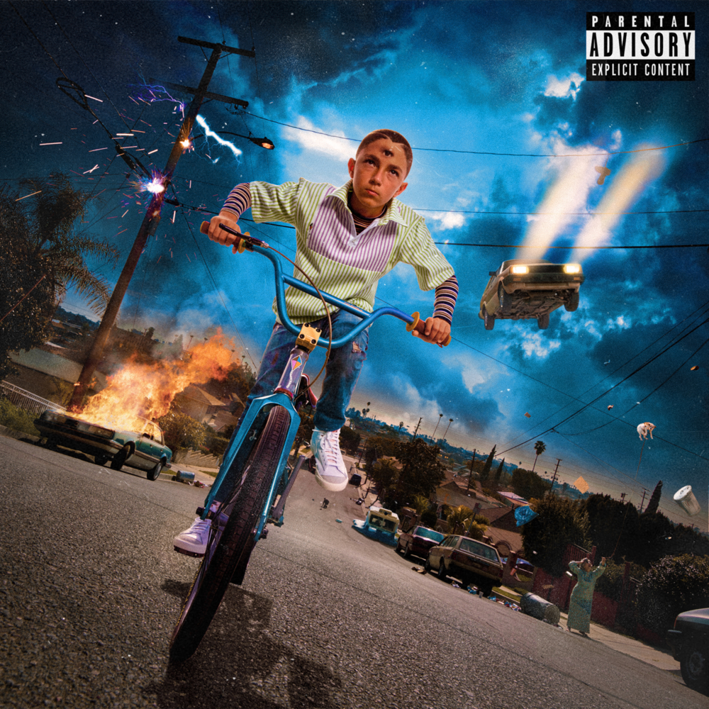
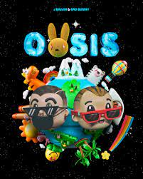

El último tour del mundo

YHLQMDLG

Oasis

Las que no iban a salir

Up Next
X 100pre

Benito Antonio Martínez Ocasio (Almirante Sur, Vega Baja, 10 de marzo de 1994), más conocido como Bad Bunny, es un rapero y compositor puertorriqueño. Su estilo de música es generalmente definido como trap latino y reguetón, pero también incorporó otros géneros como rock, kizomba y soul. También es conocido por su entonación grave y rasposa y su llamativo estilo. Empezó a ganar popularidad en SoundCloud y eventualmente firmó un contrato con un sello discográfico mientras trabajaba como empaquetador en un supermercado y estudiaba en la Universidad de Puerto Rico en Arecibo. Después del éxito de su sencillo «Soy Peor» en 2016, alcanzó la fama tras colaborar con los artistas Cardi B y Drake en los sencillos «I Like It» y «Mia» que alcanzaron el primer y tercer puesto en la lista Billboard Hot 100 respectivamente. Su álbum de estudio debut X 100pre (2018) ganó el Grammy Latino por Mejor Álbum de Música Urbana. Su álbum colaborativo con J Balvin, Oasis (2019), contiene los exitosos sencillos «Qué Pretendes» y «La Canción». Mas informacion